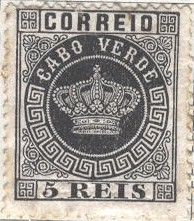
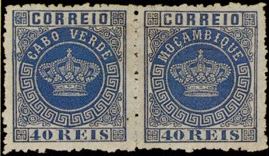
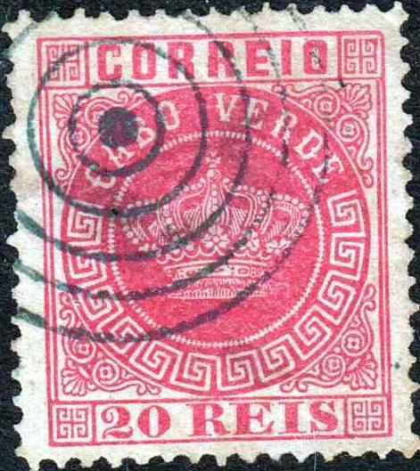
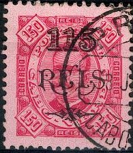

Return To Catalogue - Cabo Verde 1898 onwards and miscellaneous - Portugal
Cap Vert - Kap Verde (Kapverdische Inseln)
Note: on my website many of the
pictures can not be seen! They are of course present in the
catalogue;
contact me if you want to purchase the catalogue.


5 r black 10 r yellow 10 r green (1881) 20 r brown 20 r red (1881) 25 r red 25 r lilac (1881) 40 r blue 40 r yellow (1881) 50 r green 50 r blue (1881) 100 r lilac 200 r orange 300 r brown
These stamps have perforation 12 1/2 or 13 1/2. Stamps in similar designs were issued for most Portuguese colonies (country name different for each country), click here for more information on this issue.
Value of the stamps |
|||
vc = very common c = common * = not so common ** = uncommon |
*** = very uncommon R = rare RR = very rare RRR = extremely rare |
||
| Value | Unused | Used | Remarks |
| 5 r | *** | *** | |
| 10 r yellow | R | R | |
| 10 r green | *** | *** | |
| 20 r brown | *** | *** | |
| 20 r red | *** | *** | |
| 25 r red | ** | ** | |
| 40 r blue | RR | RR | |
| 40 r yellow | ** | ** | I've seen imperforate stamps |
| 50 r green | RR | R | |
| 50 r blue | *** | *** | |
| 100 r | *** | *** | |
| 200 r | *** | *** | |
| 300 r | *** | *** | |

Imperforate 40 r yellow pair.
These stamps were overprinted "GUINE" to be used in Portuguese Guinea.

An error exists of the 40 r; a stamp of Mozambique was accidently added in a sheet of Cape Verde stamps. Therefore the 40 r Cape Verde can be found attached to a 40 r Mozambique. This error occured for the 40 r blue as well as for the 40 r yellow.
Typical cancel, example:
Elliptic "S.VICENTE" cancel (partly visible only)
Envelope with similar elliptic cancel "CORREIO DE S.VICENTE
CABO VERDE"
Similar cancel on an envelope with a 10 r stamp and an
imperforate 40 r stamp

Envelope with circular "S.VICENTE" cancel

Mute cancel consisting of 5 concentric rings, left reduced size
Reprints were made in 1885, example:
(Reprint, reduced size)
I've seen reprints of all values.
Fournier made forgeries of these stamps. He offers them in his 1914 pricelist: the stamps of the 1877 issue (9 values) are offered for 2 Swiss Francs and the others (5 values) for 1 Swiss Franc. The misprint 40 r blue attached to a Mozambique stamps was offered for 2.50 Swiss Francs. The same misprint in yellow was offered for the same price.
They can be recognized by the following characteristics; with thanks to Bill Claghorn for the images; (Forgeries idenfication site of Bill Claghorn http://geocities.com/claghorn1p/.):
(Genuine left, forgery right)
1) The ornaments in the upper right corner are not perfect as in the genuine stamps.
(Genuine left, forgery right)
2) The large circle with 'CABO VERDE' is slightly to big for the frame. In the genuine stamps this frame doesn't touch or just touches the line below 'CORREOS'.
(Genuine left, forgery right)
3) The cross on top of the crown has a white dot in the center. In the Fournier forgeries there is no dot at all in the center, but it has the colour of the stamp.
(Genuine left, forgery right)
4) I have also noticed that the ornament in the left upper corner is almost touching the frame in the Fournier forgeries. In the genuine stamps it is further away from the frame.
Fournier forged cancels "CORREIO CIDADE DA PRAIA 10 NOV
81" and "CORREIO DE PORTO GRANDE 6/3 1881"
(reduced sizes, as taken from a Fournier Album)
On the Fournier Cape Verde forgeries I have seen the following cancels "CORREIO DE PORTO GRANDE 6 3 1881" in a double circle and "CORREIO CIDADE DA PRAIA 10 NOV 81" in an ellipse (see images above). It seems that the dates could not be changed, so this is another way of recognizing these forgeries. For Fournier forgeries of other Portuguese Colonies of this 'Crown issue', click here.
Elliptic cancel as used by Fournier on a 10 r and 300 r forgery,
reduced sizes
More information concerning Fournier forgeries of this country can be found at: http://www.tabacaria.org/Selos/Coroa/CVFournier.htm.
Brasilian forgeries (actually made by Oneglia?)

 :
:
Some so-called Brazilian forgeries also exist,
they have a dot at the right hand side of the "E" of
"CORREIO".More images can be found at:
http://www.tabacaria.org/Selos/Coroa/Acentocrown.htm.
The above forgeries appear to have the bar "1" cancel,
which was often used by Oneglia. These forgeries did not appear
yet in his 1898 and 1899 pricelists.
By the way, a different forgery type is listed as Oneglia forgery in the book 'Forgeries of Portugal and Colonies by D.J. Davies, 2002', Published by the Portuguese Philatelic Society: there a forgery Type 2 is said to be an Oneglia forgery. Yet it does not have an Oneglia cancel, while a forgery Type 5 actually appears to resemble the above forgeries. The fact that the bars with "1" cancel appears on the Cabo Verde forgeries and the bars with "G" on the Portugues Guinea ones appears proof enough to me that these are actually Oneglia forgeries.
Copied from 'Forgeries of Portugal and Colonies by D.J. Davies,
2002'. Forgery Type 5 here appears to have a bars with
"1" cancel.
These forgeries with "GUINE" overprint and a bars and
"G" cancel which was often used by the forger Oneglia.

(Reduced size)
5 r black 10 r green 20 r red 25 r violet (various shades, see picture: 25 r blue) 40 r brown 50 r blue 100 r brown 200 r lilac 300 r orange
For more information concerning this embossed issue for other colonies, click here.
Value of the stamps |
|||
vc = very common c = common * = not so common ** = uncommon |
*** = very uncommon R = rare RR = very rare RRR = extremely rare |
||
| Value | Unused | Used | Remarks |
| 5 r | ** | ** | |
| 10 r | ** | ** | |
| 20 r | *** | *** | |
| 25 r | ** | ** | |
| 40 r | *** | ** | |
| 50 r | *** | * | |
| 100 r | *** | *** | |
| 200 r | *** | *** | |
| 300 r | *** | *** | |
Surcharged with fancy letters (1902)
(No picture available yet, if anybody posesses
a picture, please contact me!
click here for stamps of other colonies
with similar surcharges)
'65 REIS' (red) on 5 r black '65 REIS' on 200 r lilac '65 REIS' on 300 r orange '115 REIS' on 10 r green '115 REIS' on 20 r red '130 REIS' on 50 r blue '130 REIS' on 100 r brown '400 REIS' on 25 r violet '400 REIS' on 40 r brown
Value of the stamps |
|||
vc = very common c = common * = not so common ** = uncommon |
*** = very uncommon R = rare RR = very rare RRR = extremely rare |
||
| Value | Unused | Used | Remarks |
| 65 r on 5 r | *** | *** | |
| 65 r on 200 r | *** | *** | |
| 65 on 300 r | *** | *** | |
| 115 r on 10 r | *** | *** | |
| 115 r on 20 r | *** | *** | |
| 130 r on 50 r | *** | *** | |
| 130 r on 100 r | *** | *** | |
| 400 r on 20 r | *** | *** | |
| 400 r on 40 r | *** | *** | |
Surcharged with fancy letters and overprinted 'REPUBLICA' in red (1915)
(No picture available yet, if anybody posesses
a picture, please contact me!
click here for stamps of other colonies
with similar surcharges)
'115 Reis' on 10 r green '115 Reis' on 20 r red '130 Reis' on 50 r blue '130 Reis' on 100 r brown
The overprint 'REPUBLICA' is broad.
Value of the stamps |
|||
vc = very common c = common * = not so common ** = uncommon |
*** = very uncommon R = rare RR = very rare RRR = extremely rare |
||
| Value | Unused | Used | Remarks |
| 115 r on 10 r | ** | ** | |
| 115 r on 20 r | ** | ** | |
| 130 r on 50 r | ** | ** | |
| 130 r on 100 r | * | * | |
2 1/2 r brown
Stamps in a similar design were issued for most Portuguese colonies (country name different for each country), click here for more information on this issue.
Value of the stamps |
|||
vc = very common c = common * = not so common ** = uncommon |
*** = very uncommon R = rare RR = very rare RRR = extremely rare |
||
| Value | Unused | Used | Remarks |
| 2 1/2 r | * | * | |
Surcharged in fancy letters
(No picture available yet, if anybody posesses
a picture, please contact me!
click here for stamps of other colonies
with similar surcharge)
'400 REIS' on 2 1/2 r brown (1902)
Value of the stamps |
|||
vc = very common c = common * = not so common ** = uncommon |
*** = very uncommon R = rare RR = very rare RRR = extremely rare |
||
| Value | Unused | Used | Remarks |
| 400 r on 2 1/2 r | ** | ** | |
Overprinted 'Republica' (horizontal) and surcharged in fancy letters
click here for stamps of other colonies
with similar surcharge)
'40 c.' and bars on '400 REIS' on 2 1/2 r brown (1925)
Value of the stamps |
|||
vc = very common c = common * = not so common ** = uncommon |
*** = very uncommon R = rare RR = very rare RRR = extremely rare |
||
| Value | Unused | Used | Remarks |
| 40 c on 400 r on 2 1/2 r | * | * | |

5 r yellow 10 r lilac 15 r brown 20 r lilac 25 r green 50 r blue 75 r red 80 r green 100 r brown on yellow 150 r red on red 200 r blue blue 300 r blue on red
Stamps in similar designs were issued for most Portuguese colonies (country name different for each country), click here for more information on this issue.
Value of the stamps |
|||
vc = very common c = common * = not so common ** = uncommon |
*** = very uncommon R = rare RR = very rare RRR = extremely rare |
||
| Value | Unused | Used | Remarks |
| 5 r | * | * | |
| 10 r | ** | ** | |
| 15 r | ** | ** | |
| 20 r | ** | ** | |
| 25 r | ** | * | |
| 50 r | ** | * | |
| 75 r | *** | *** | |
| 80 r | *** | *** | |
| 100 r | *** | *** | |
| 150 r | *** | *** | |
| 200 r | R | R | |
| 300 r | *** | *** | |
Surcharged with fancy letters (1902)

'65 REIS' on 10 r lilac '65 REIS' on 20 r lilac '65 REIS' on 100 r brown on yellow '115 REIS' on 5 r yellow '115 REIS' on 25 r green '115 REIS' on 150 r red on red '130 REIS' on 75 r red '130 REIS' on 80 r green '130 REIS' on 200 r blue on blue '400 REIS' on 50 r blue '400 REIS' on 300 r blue on red
Click here for stamps of other colonies with similar surcharges.
Value of the stamps |
|||
vc = very common c = common * = not so common ** = uncommon |
*** = very uncommon R = rare RR = very rare RRR = extremely rare |
||
| Value | Unused | Used | Remarks |
| 65 r on 10 r | *** | *** | |
| 65 r on 20 r | *** | *** | |
| 65 r on 100 r | *** | *** | |
| 115 r on 5 r | *** | *** | |
| 115 r on 25 r | *** | *** | |
| 115 r on 150 r | *** | *** | |
| 130 r on 75 r | *** | *** | |
| 130 r on 80 r | *** | *** | |
| 130 r on 200 r | *** | *** | |
| 400 r on 50 r | *** | *** | |
| 400 r on 300 r | ** | ** | |
Surcharged with fancy letters and overprinted 'REPUBLICA' in red unless otherwise stated (1914)
'115 Reis' on 5 r yellow '115 Reis' on 25 r green '115 Reis' on 150 r red on red (overprint green or red) '130 Reis' on 75 r red '130 Reis' on 80 r green '130 Reis' on 200 r blue on blue
Click here for stamps of other colonies with similar surcharges.)
Value of the stamps |
|||
vc = very common c = common * = not so common ** = uncommon |
*** = very uncommon R = rare RR = very rare RRR = extremely rare |
||
| Value | Unused | Used | Remarks |
| With normal 'REPUBLICA' overprint in red (1915) | |||
| 115 r on 5 r | * | * | |
| 115 r on 25 r | * | * | |
| 115 r on 150 r | * | * | |
| 130 r on 75 r | ** | ** | |
| 130 r on 80 r | * | * | |
| 130 r on 200 r | *** | *** | |
| With local 'REPUBLICA' overprint (1913) | |||
| 115 r on 150 r | RR | - | Green 'REPUBLICA' overprint, Non issued |
| 130 r on 80 r | *** | *** | Red 'REPUBLICA' overprint |
| 130 r on 200 r | RR | - | Red 'REPUBLICA' overprint, Non issued |
Surcharged with fancy letters and overprinted 'REPUBLICA' in red and surcharged (1922)
'$ 04' and bars on '130 REIS' on 75 r red '$ 04' and bars on '130 REIS' on 80 r green '$ 04' and bars on '130 REIS' on 200 r blue on blue
Value of the stamps |
|||
vc = very common c = common * = not so common ** = uncommon |
*** = very uncommon R = rare RR = very rare RRR = extremely rare |
||
| Value | Unused | Used | Remarks |
| '$04' on 130 r on 75 r | ** | ** | Normal 'REPUBLICA' overprint |
| '$04' on 130 r on 80 r | * | * | Normal 'REPUBLICA' overprint or local 'REPUBLICA' overprint (**) |
| '$04' on 130 r on 200 r | * | * | Normal 'REPUBLICA' overprint |
Overprinted 'Republica' (horizontal) and surcharged in fancy letters
'40 c.' and bars on '400 REIS' on 300 r blue on red
Value of the stamps |
|||
vc = very common c = common * = not so common ** = uncommon |
*** = very uncommon R = rare RR = very rare RRR = extremely rare |
||
| Value | Unused | Used | Remarks |
| 40 c on 400 r on 300 r | * | * | |
Stamps - Briefmarken - Timbres-Poste - Postzegels - Francobolli - Estampillas
{kind=link}
{kind=link}
{kind=link}